🌿 1. Thủ Phủ Tây Đô — Trái Tim Châu Thổ Cửu Long
Trải qua hơn 280 năm hình thành và phát triển từ thời mở cõi phương Nam của các bậc tiền nhân, Cần Thơ mang trong mình vẻ đẹp giao thoa độc đáo giữa nét thanh bình, êm ả của vùng đồng bằng châu thổ và sự hiện đại, năng động của một đô thị trực thuộc Trung ương. Hệ thống kênh rạch chằng chịt đan xen như mạng nhện đã hun đúc nên một nền văn minh sông nước đặc sắc, nơi tiếng mái chèo khua nước, tiếng mời chào rôm rả trên chợ nổi và câu hò vọng cổ mênh mang trên bến Ninh Kiều đã trở thành linh hồn của đất và người Tây Đô.
Khí hậu Cần Thơ quanh năm ấm áp, ôn hòa với hai mùa mưa nắng rõ rệt. Không chịu ảnh hưởng của bão gió khắc nghiệt, Cần Thơ dang tay đón chào du khách bốn mùa: mùa hè rực rỡ với những vườn cây trĩu quả thơm lừng; mùa nước nổi tưng bừng với cá linh, bông điên điển; và những ngày giáp Tết ngập tràn sắc hoa rực rỡ trên bến dưới thuyền.
🏛️ 2. Vị Trí Địa Lý & Dấu Ấn Lịch Sử Thành Lập
Thành phố Cần Thơ nằm ở vị trí trung tâm vùng hạ lưu châu thổ sông Mê Kông, trải dài bên bờ hữu ngạn sông Hậu. Theo Nghị quyết số 22/2003/QH11 ngày 26/11/2003 của Quốc hội khóa XI, tỉnh Cần Thơ chính thức được chia tách để thành lập Thành phố Cần Thơ trực thuộc Trung ương. Với diện tích tự nhiên 1.439 km² và dân số trên 1,2 triệu người, Cần Thơ giữ vai trò hạt nhân kinh tế, trung tâm đào tạo y tế - giáo dục và đầu mối giao thông huyết mạch của toàn vùng ĐBSCL.
Hệ thống hạ tầng giao thông kết nối Cần Thơ ngày nay đã phát triển vượt bậc với Cầu Cần Thơ (khánh thành ngày 24/4/2010 với nhịp chính dây văng 550m dài nhất Đông Nam Á thời điểm bấy giờ), Sân bay Quốc tế Cần Thơ kết nối các đường bay nội địa và quốc tế, cùng tuyến cao tốc huyết mạch TP.HCM – Trung Lương – Mỹ Thuận – Cần Thơ rút ngắn thời gian di chuyển từ Sài Gòn về miền Tây chỉ còn chưa đầy 2 giờ đồng hồ.
🏆 Di sản Văn hóa Phi vật thể Quốc gia Chợ nổi Cái Răng
Ngày 10/3/2016, Bộ Văn hóa, Thể thao và Du lịch đã chính thức ban hành Quyết định số 266/QĐ-BVHTTDL công nhận "Văn hóa Chợ nổi Cái Răng" là Di sản văn hóa phi vật thể quốc gia. Đây là niềm tự hào lớn lao, khẳng định giá trị lịch sử, phương thức sinh hoạt và tập quán giao thương đường thủy độc nhất vô nhị của cư dân Tây Nam Bộ.
📜 3. Huyền Thoại Cầm Thi Giang & Giai Thoại Sông Nước
✨ Giai thoại Cầm Thi Giang — Tiếng đàn ca giữa đêm trăng sông Hậu
Theo dân gian truyền tụng, vào cuối thế kỷ XVIII, khi chúa Nguyễn Ánh (vua Gia Long sau này) bôn tẩu lánh nạn ở miền Tây Nam Bộ, thuyền ngự có lần xuôi theo dòng sông về vùng Trấn Giang (Cần Thơ xưa). Trong đêm thanh vắng trăng thanh gió mát, chúa nghe thấy từ trên bờ sông vọng lại những khúc đàn ca tài tử êm đềm, tiếng sáo trúc réo rắt du dương hòa cùng giọng ngâm thơ trong trẻo của các thiếu nữ. Cảm xúc trào dâng trước cảnh sắc thái bình giữa loạn lạc, chúa Nguyễn bèn đặt tên cho dòng sông là "Cầm Thi Giang" (dòng sông của đàn và thơ). Về sau, người dân đọc chệch âm Cầm Thi thành Cần Thơ.
✨ Tích xưa "Cây Bẹo" — Ngôn ngữ không lời của Chợ nổi Cái Răng
Giữa bốn bề sông nước sóng vỗ dập dềnh và tiếng máy nổ vang rền của hàng trăm ghe xuồng, người buôn bán chợ nổi đã sáng tạo nên phương thức tiếp thị tài tình: cây tre dài cắm dựng đứng trước mũi ghe gọi là "cây bẹo". Cây bẹo thể hiện tập quán "treo gì bán nấy": treo trái dưa hấu bán dưa hấu, treo chùm nhãn bán nhãn; "treo mà không bán" là quần áo gia đình phơi trên ghe; "không treo mà bán" là những chiếc ghe nhỏ len lỏi bán bún riêu, cà phê, hủ tiếu; và "treo cái này nhưng bán cái khác" là treo một tấm lá dừa ngụ ý muốn bán chính chiếc ghe ấy.
✨ Giai thoại phong thủy Nhà cổ Bình Thủy họ Dương
Ngôi nhà cổ 5 gian do ông Dương Chấn Kỷ khởi dựng từ năm 1870 ẩn chứa câu chuyện thú vị về thuật phong thủy Nam Bộ. Trước khi dựng nhà, gia chủ đã mời thầy địa lý phong thủy đặt đá trừ tà, chọn thế đất rồng cuộn hổ ngồi bên rạch Bình Thủy để hậu thế đỗ đạt, phát tài. Khi giao thoa kiến trúc Pháp vào đầu thế kỷ XX, các nghệ nhân đã khéo léo kết hợp hệ thống hoa văn xi măng gothic Tây phương với hoa văn thuần Việt tùng - cúc - trúc - mai, biến nơi đây thành viên ngọc kiến trúc độc nhất vô nhị trải qua hơn một thế kỷ phong ba.
🌸 4. Chuỗi Hình Ảnh 4 Mùa Du Lịch Cần Thơ
Khác với vùng núi cao Tây Bắc đổi màu theo hoa nở, bốn mùa của Tây Đô vận động nhịp nhàng theo con nước phù sa và mùa vụ nông nghiệp trù phú của đồng bằng châu thổ:
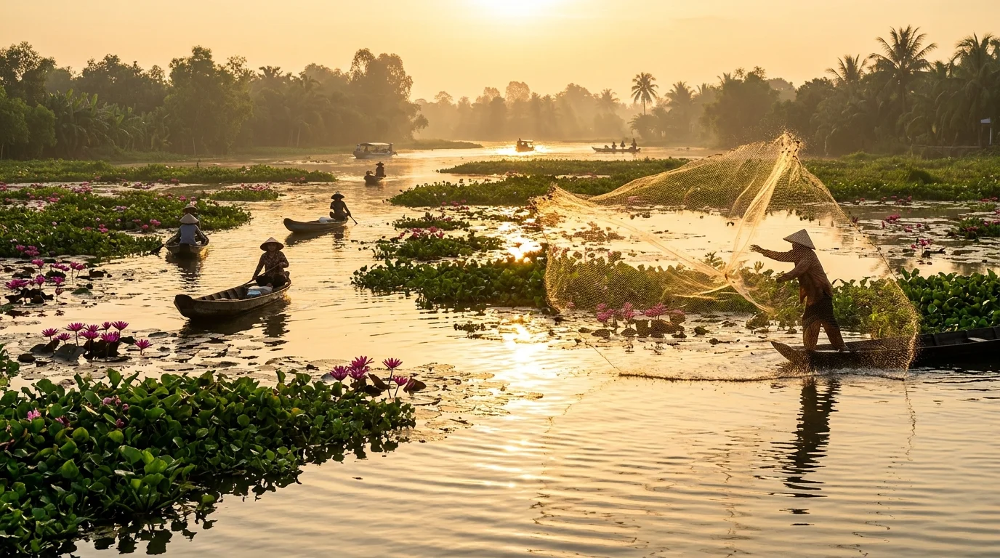
Tháng 9 – 11Mùa Nước Nổi & Chợ Nổi Cái Răng
Khi con nước từ thượng nguồn sông Mê Kông tràn về mang theo phù sa đỏ rực và nguồn tôm cá dồi dào, Chợ nổi Cái Răng nhộn nhịp hơn bao giờ hết với hàng trăm ghe thuyền chở đầy sản vật tươi rói, bông súng, cá linh nhảy xoi xói.
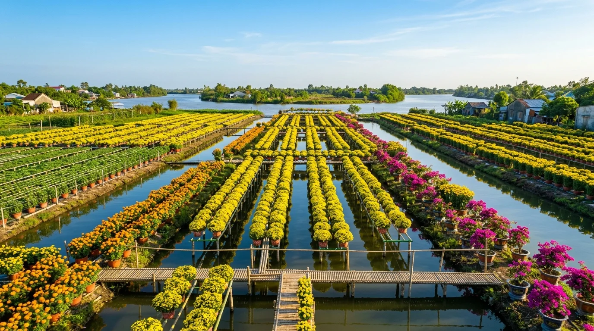
Tháng 12 – 1Mùa Hoa Tết Làng Hoa Bà Bộ
Những ngày giáp Tết, các làng hoa truyền thống lâu đời như Bà Bộ, Phó Thọ (quận Bình Thủy) bừng sáng sắc vàng rực của cúc mâm xôi, vạn thọ, hoa giấy ngũ sắc, chuẩn bị theo ghe thuyền xuôi ngược tỏa đi khắp Nam Kỳ.
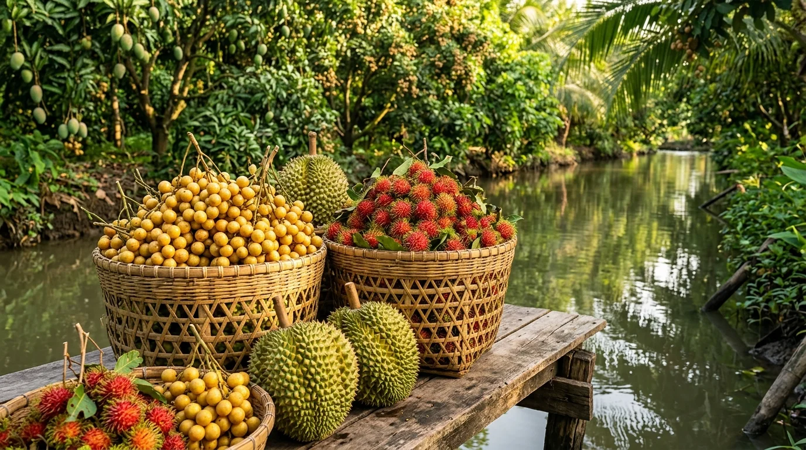
Tháng 5 – 8Mùa Trái Cây Trĩu Cành Miệt Vườn
Thiên đường của những tín đồ ẩm thực hoa quả nhiệt đới. Các miệt vườn Phong Điền, Cù lao Tân Lộc trĩu nặng dâu Hạ Châu thơm ngọt, sầu riêng Ri6 cơm vàng hạt lép, chôm chôm chín đỏ rực và măng cụt mọng nước.
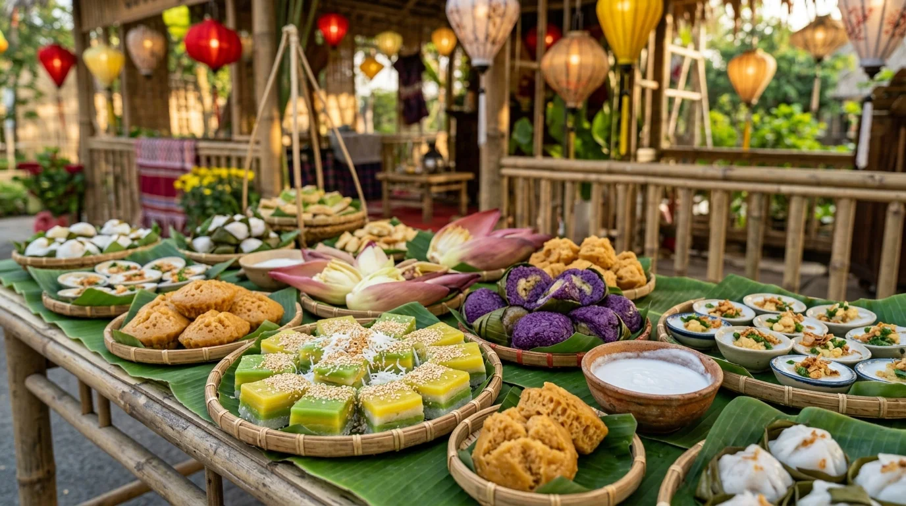
Tháng 3 – 4 âm lịchMùa Lễ Hội Bánh Dân Gian Nam Bộ
Đại hội ẩm thực văn hóa quy mô bậc nhất miền Tây hội tụ hàng trăm loại bánh dân gian: bánh xèo khổng lồ, bánh tét lá cẩm, bánh da lợn, bánh bò thốt nốt cùng các màn biểu diễn đờn ca tài tử rộn rã.
📸 5. Top 9 Tọa Độ Thắng Cảnh Biểu Tượng & Dấu Tích Lịch Sử
(Nhấp vào từng hình ảnh để xem chi tiết ảnh chất lượng cao và câu chuyện truyền tích lịch sử chính thống)
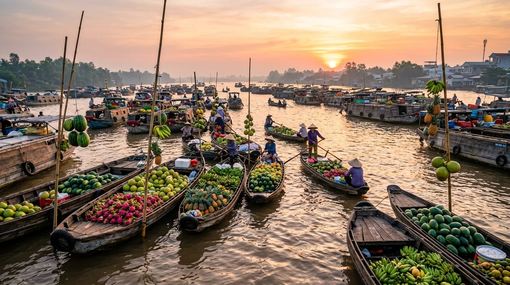
1. Chợ Nổi Cái Răng (Di Sản Quốc Gia)
Bức tranh giao thương sông nước bồng bềnh lúc bình minh với hàng trăm ghe xuồng chở đầy hoa trái nhiệt đới và cây bẹo độc đáo.
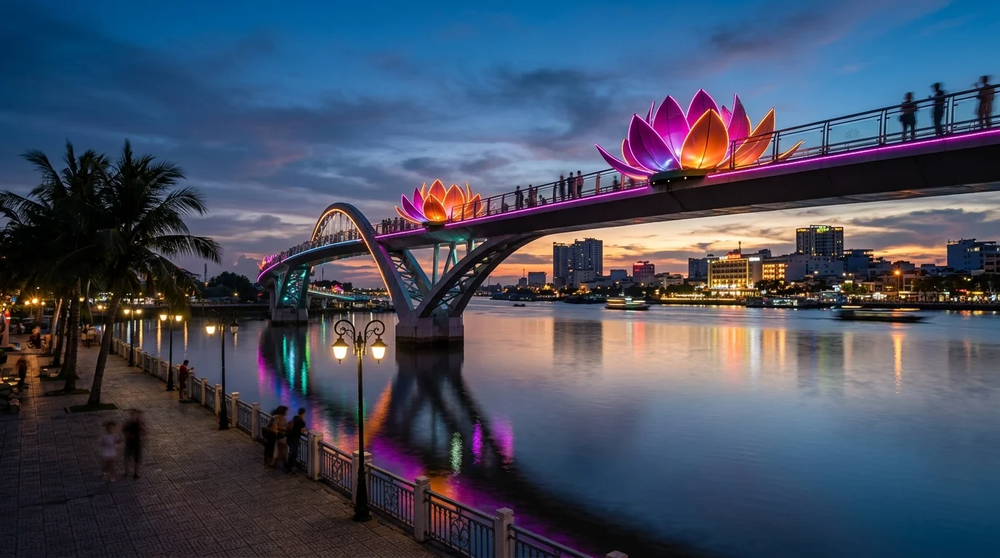
2. Bến Ninh Kiều & Cầu Tình Yêu
Công viên ven sông Hậu lộng gió, ngắm du thuyền lộng lẫy và cầu đi bộ hoa sen lung linh ánh đèn lúc hoàng hôn.
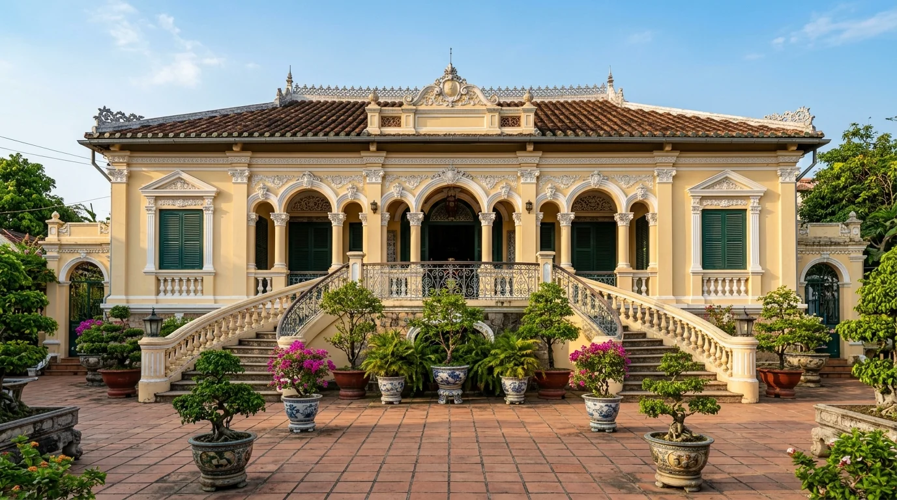
3. Nhà Cổ Bình Thủy (Họ Dương)
Viên ngọc kiến trúc Pháp - Việt hơn 150 năm tuổi với kho tàng cổ vật quý hiếm và khu vườn phong lan tao nhã.
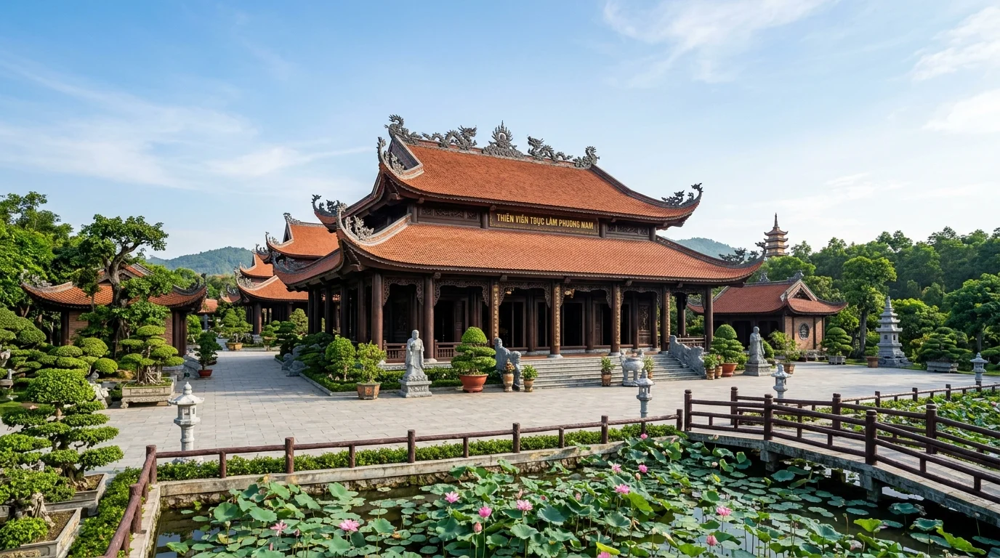
4. Thiền Viện Trúc Lâm Phương Nam
Thiền viện Phật giáo lớn nhất miền Tây với chánh điện gỗ lim uy nghiêm, hồ sen thơm ngát và tượng Phật thanh tịnh.
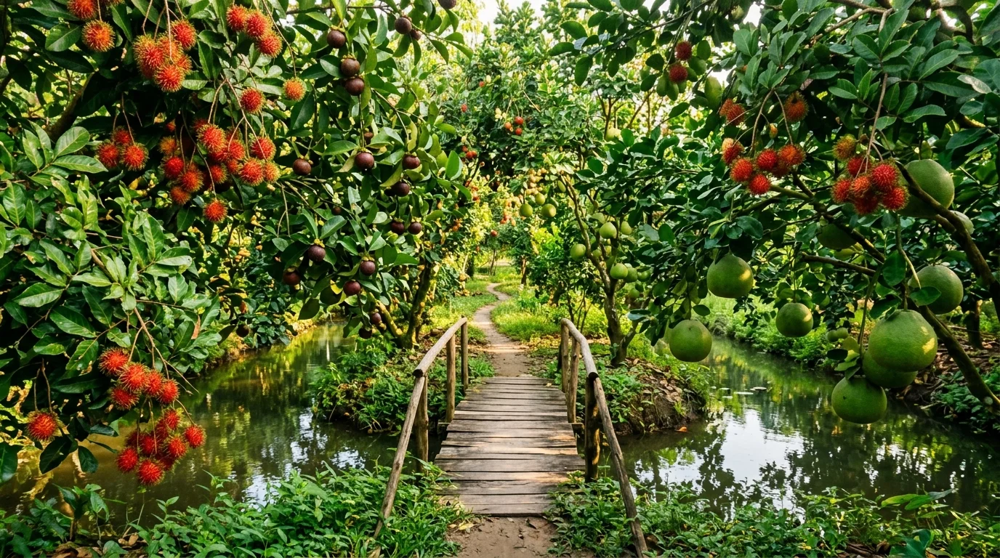
5. Miệt Vườn Sinh Thái Phong Điền
Không gian sinh thái miệt vườn trù phú, tự tay trẩy chôm chôm, sầu riêng chín cây và thư thái chèo xuồng dưới tán lá xanh mát.
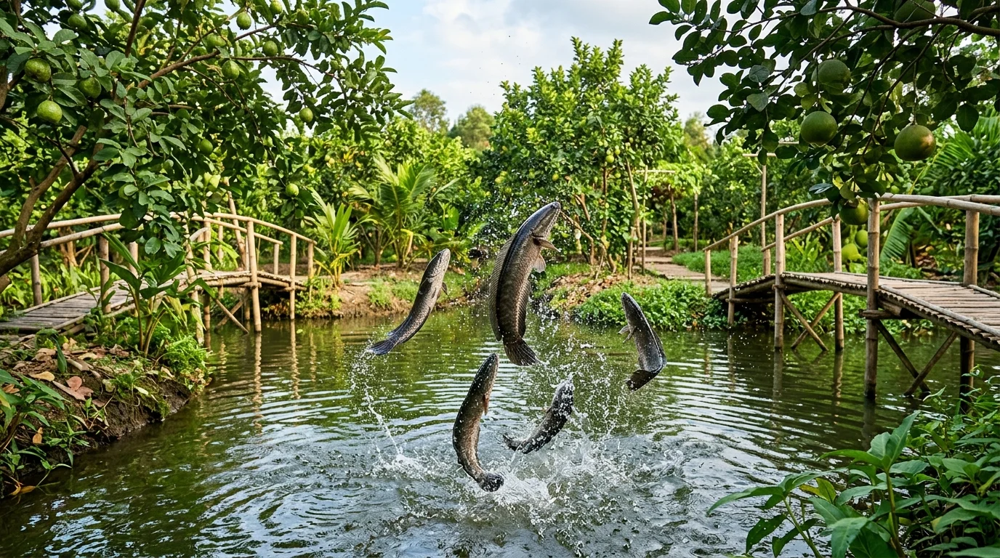
6. Cồn Sơn & Trải Nghiệm "Cá Lóc Bay"
Điểm du lịch cộng đồng trứ danh giữa sông Hậu với màn xiếc cá lóc bay kỳ thú, vườn ổi xanh mát và lớp học làm bánh truyền thống.
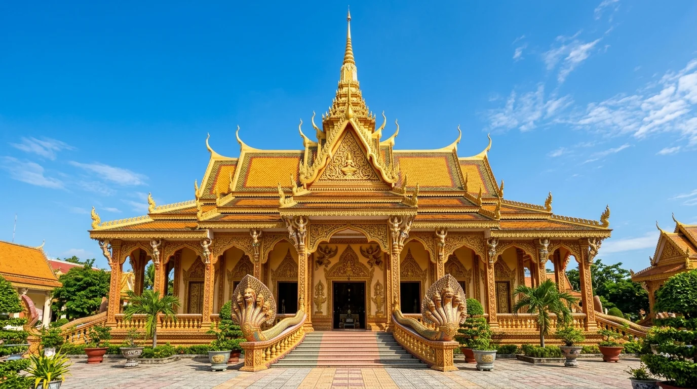
7. Chùa Khmer Munir Ansay
Ngôi chùa Angkor thu nhỏ rực rỡ sắc vàng kim ngay giữa lòng đô thị, điểm giao thoa văn hóa tâm linh độc đáo.
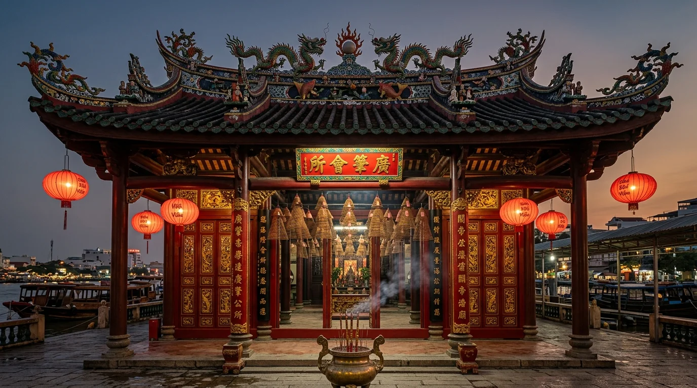
8. Chùa Ông (Quảng Triệu Hội Quán)
Di tích kiến trúc nghệ thuật cổ kính của cộng đồng người Hoa với nghệ thuật gốm phù điêu tuyệt xảo và khói hương vòng tôn nghiêm.
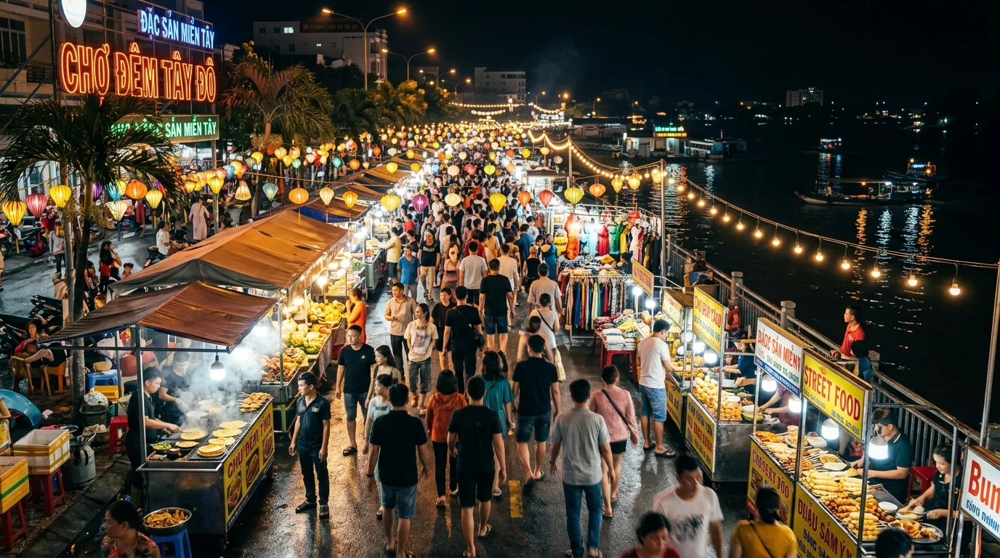
9. Chợ Đêm Tây Đô & Phố Đi Bộ
Thiên đường ẩm thực đêm rực rỡ sắc màu, thưởng thức quà vặt miền sông nước và ngắm nhìn nhịp sống Tây Đô lung linh.
🚗 6. Cẩm Nang Di Chuyển & Tuyến Cao Tốc Huyết Mạch
Cần Thơ là đầu mối giao thông của vùng ĐBSCL nên du khách từ mọi miền đất nước có thể tiếp cận vô cùng thuận tiện:
- Đường hàng không (Sân bay Quốc tế Cần Thơ - VCA): Các hãng hàng không Vietnam Airlines, Vietjet Air khai thác các đường bay thẳng khứ hồi mỗi ngày từ Hà Nội, Đà Nẵng, Hải Phòng, Vinh, Phú Quốc... Thời gian bay từ Hà Nội chỉ khoảng 2 giờ 10 phút.
- Đường bộ cao tốc từ TP.HCM: Tuyến cao tốc Bắc - Nam phía Đông (đoạn TP.HCM – Trung Lương – Mỹ Thuận – Cầu Mỹ Thuận 2 – Cần Thơ) đã thông xe toàn tuyến, rút ngắn thời gian chạy xe ô tô / xe khách limousine chất lượng cao xuống chỉ còn khoảng 2 tiếng đến 2,5 tiếng. Giá vé xe khách: 160.000 – 220.000 VNĐ/vé.
- Phương tiện tham quan Chợ nổi: Để đi Chợ nổi Cái Răng, du khách nên có mặt tại bến tàu du lịch Ninh Kiều hoặc bến tàu Cái Răng từ 5:00 – 5:30 sáng. Giá thuê tàu thuyền dao động từ 350.000 – 600.000 VNĐ/tàu riêng (chở 6 - 15 người) hoặc 80.000 – 100.000 VNĐ/khách vé lẻ.
🍲 7. Tinh Hoa Ẩm Thực Thủ Phủ Tây Đô
Ẩm thực Cần Thơ là bản hòa ca tuyệt vời giữa nguồn thủy hải sản nước ngọt phong phú của dòng Mê Kông và phong vị hào sảng, phóng khoáng của đất phương Nam:
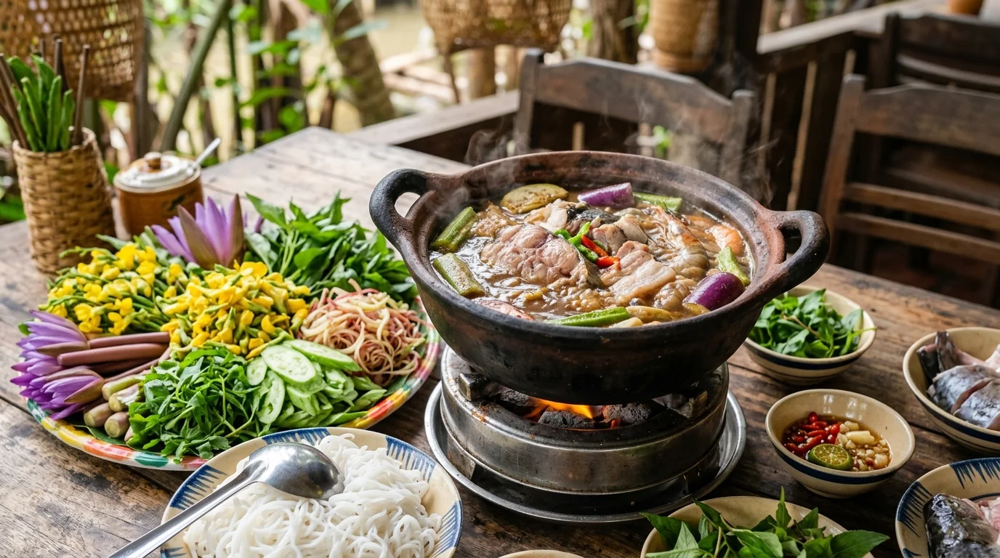
Đệ nhất đặc sảnLẩu Mắm Cần Thơ
Nồi nước lẩu mắm sánh vàng sôi sùng sục được chắt lọc từ mắm cá linh và mắm cá sặc ủ kỹ, thơm nức hương sả ớt và nước dừa tươi ngọt thanh. Thả vào nồi là cá hú béo ngậy, tôm sông tươi rói, mực giòn, thịt ba chỉ và đĩa rau đồng bạt ngàn hơn 20 loại: bông điên điển, bông súng, so đũa, rau đắng, cù nèo ăn kèm bún trắng tinh.
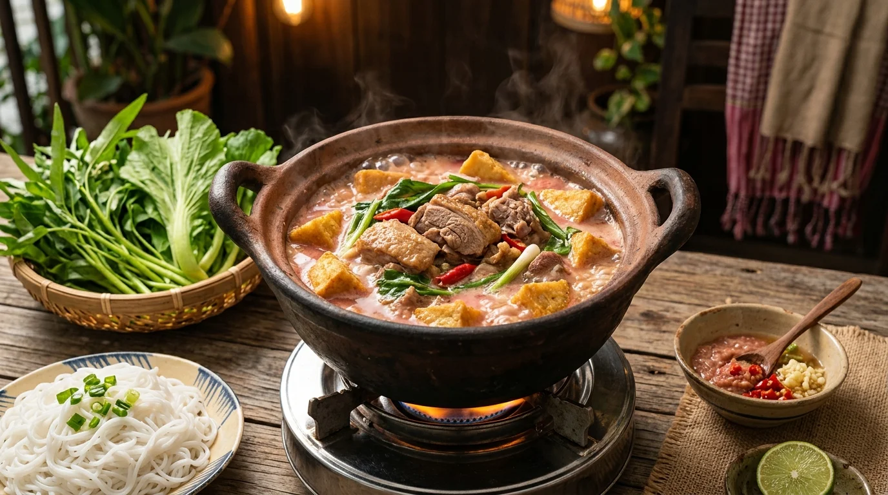
Món ngon di sảnVịt Nấu Chao Thành Giao
Từng được Tổ chức Kỷ lục Việt Nam vinh danh trong Top 100 món ăn đặc sản tiêu biểu. Thịt vịt xiêm thả vườn săn chắc được ướp đẫm chao trắng, chao đỏ lên men gia truyền, nấu cùng khoai môn dẻo bùi và nấm rơm trong nước dừa xiêm. Nước lẩu béo ngậy chấm chén chao pha ớt hiểm cay xé lưỡi, nhúng ngập rau muống non giòn ngọt.
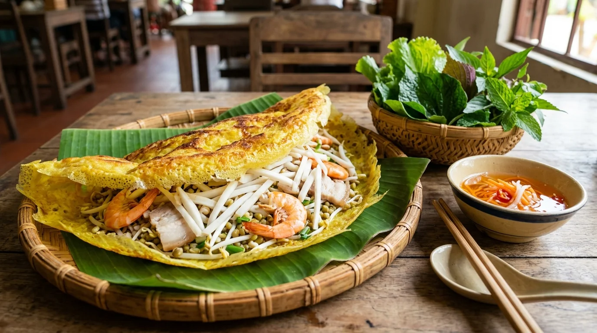
Nghệ nhân Mười XiêmBánh Xèo Củ Hủ Dừa
Chiếc bánh xèo khổng lồ miền Tây đổ mỏng tanh trên chảo gang lớn với bột gạo pha nước cốt dừa và nghệ tươi vàng ruộm. Nhân bánh là sự kết hợp đỉnh cao của củ hủ dừa non ngọt giòn, tép bạc sông tươi ngọt thịt, thịt ba chỉ và giá đỗ. Cuốn miếng bánh xèo nóng hổi cùng đọt xoài non, lá cách, cải bẹ xanh chấm nước mắm tỏi ớt chua ngọt đậm đà.
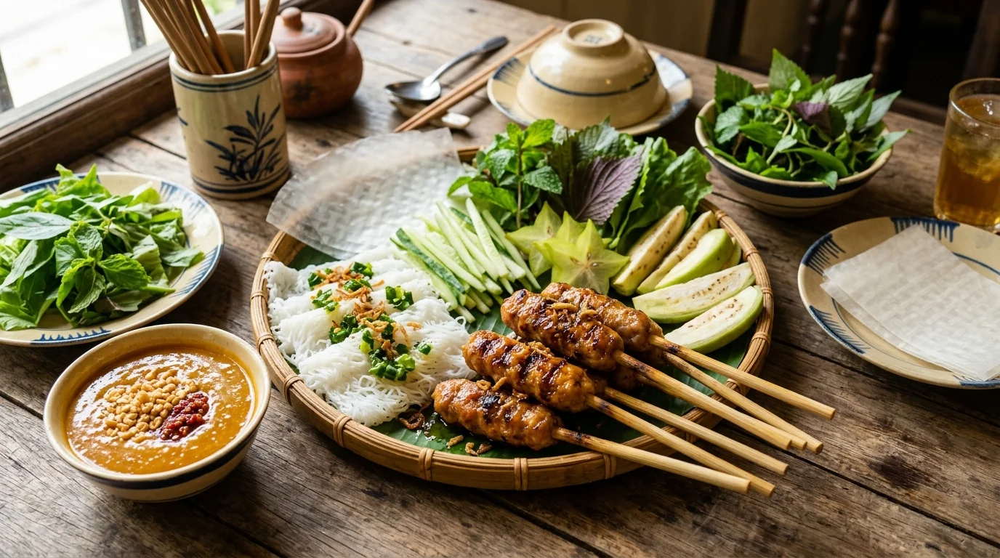
Đặc sản gia truyềnNem Nướng Cái Răng
Thịt heo nạc tươi vừa mổ còn nóng hổi được quết nhuyễn bằng chày tay với tỏi, tiêu hạt và gia vị bí truyền, viên tròn xiên trên que tre nướng trên bếp than hoa rực hồng. Miếng nem nướng vàng óng mỡ màng, cuốn cùng bánh tráng mỏng, bánh hỏi trắng mịn, khế chua, chuối chát và chấm ngập trong chén tương nếp xay sánh mịn rắc đậu phộng rang giòn.
💰 8. Bảng Giá Vé Tham Quan & Trải Nghiệm Cần Thơ
| Điểm tham quan / Dịch vụ trải nghiệm | Địa điểm | Giá vé tham khảo |
|---|---|---|
| Tàu thuyền Chợ nổi Cái Răng (Vé lẻ ghép đoàn) | Bến Ninh Kiều | 80.000 – 100.000 VNĐ / người |
| Thuê tàu riêng Chợ nổi Cái Răng (Tàu 10 – 15 chỗ) | Bến Ninh Kiều / Cái Răng | 400.000 – 650.000 VNĐ / tàu trọn gói |
| Nhà cổ Bình Thủy | Đường Bùi Hữu Nghĩa, Bình Thủy | 30.000 VNĐ / người |
| Cồn Sơn (Vé đò qua sông + tham quan vườn cá lóc bay) | Phường Bùi Hữu Nghĩa, Bình Thủy | 80.000 – 120.000 VNĐ / người |
| Làng du lịch Mỹ Khánh (Vé vào cổng) | Xã Mỹ Khánh, Phong Điền | 90.000 VNĐ (Người lớn) / 50.000 VNĐ (Trẻ em) |
| Thiền viện Trúc Lâm Phương Nam | Xã Mỹ Khánh, Phong Điền | Miễn phí vé |
| Chùa Ông & Chùa Munir Ansay | Quận Ninh Kiều | Miễn phí vé |
🧭 9. Gợi Ý Lịch Trình Khám Phá Tây Đô
📅 Lịch trình 2 Ngày 1 Đêm (Trải nghiệm trọn vẹn nét duyên Tây Đô)
Ngày 1: TP.HCM / Hà Nội đến Cần Thơ → Check-in khách sạn bến Ninh Kiều → Chiều thăm Nhà cổ Bình Thủy, viếng Chùa Ông linh thiêng → Hoàng hôn tản bộ Cầu Tình Yêu ngắm du thuyền sông Hậu → Tối thưởng thức vịt nấu chao Thành Giao và khám phá Chợ đêm Ninh Kiều.
Ngày 2: 5:00 sáng xuất bến Ninh Kiều đi Chợ nổi Cái Răng, ăn tô bún riêu nóng hổi bồng bềnh trên ghe → Ghé Cồn Sơn chiêm ngưỡng màn xiếc cá lóc bay kỳ thú → Xuôi thuyền về miệt vườn Phong Điền tự tay hái trái cây và viếng Thiền viện Trúc Lâm Phương Nam → Trưa thưởng thức lẩu mắm đậm đà → Mua bánh tét lá cẩm, trái cây làm quà rồi trở về.